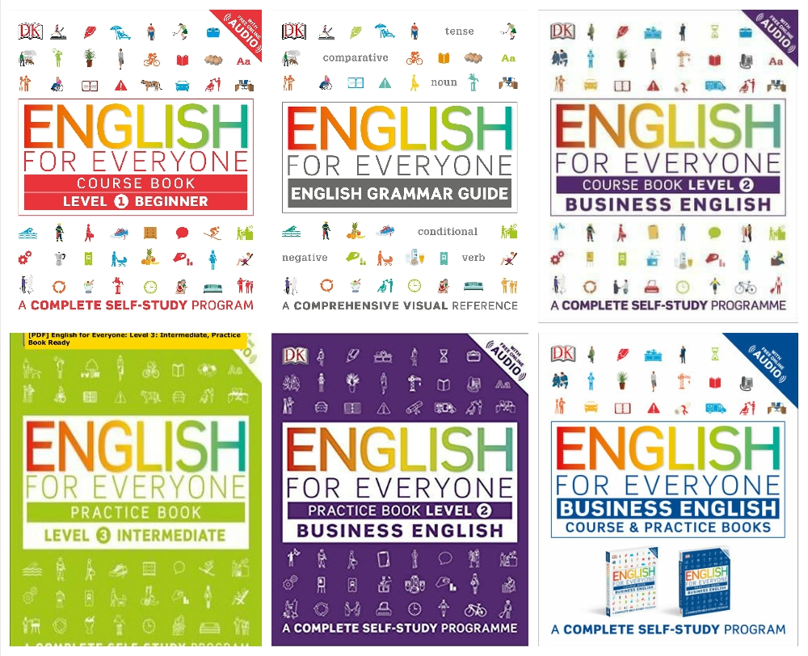

Учебники.
Это подборка учебников для разных уровней, которые помогут вам прокачать все основные навыки английского языка: чтение, говорение, аудирование, лексику и грамматику.
Все грамматические правила автор English for Everyone изложила кратко и доступным языком — так, чтобы их понял каждый. В учебниках нет длинных параграфов: теория описана в схемах и иллюстрациях. При этом и лексику, и грамматику, и аудирование читатель изучает на полезных для жизни темах. Например, разобраться в предлогах здесь можно на примере ситуации, когда вам нужно объяснить кому-то дорогу. English for Everyone — это полный курс по английскому языку, который делится по уровням. В серию входят учебники:
- English for Everyone. Самоучитель для начинающих. Уровень 1.
- English for Everyone. Самоучитель для начинающих. Уровень 2.
- English for Everyone. Самоучитель для продолжающих. Уровень 3.
- English for Everyone. Самоучитель для продвинутых. Уровень 4.

Вернуться в начало
|